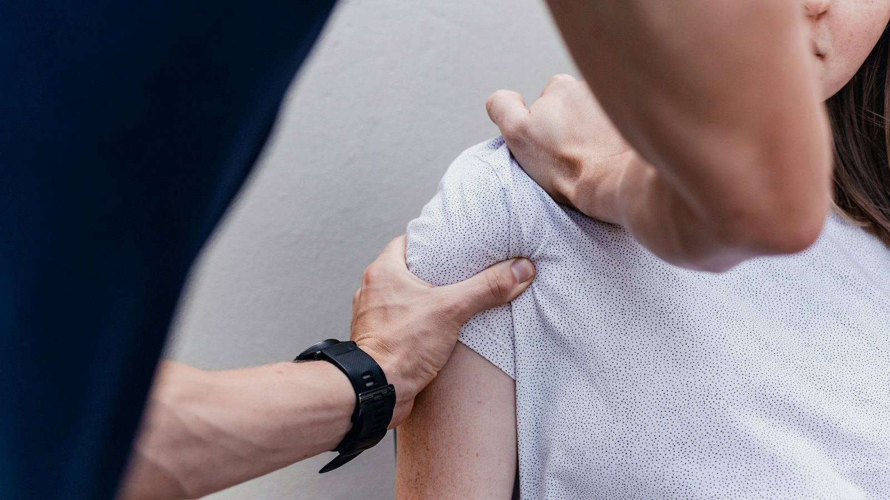
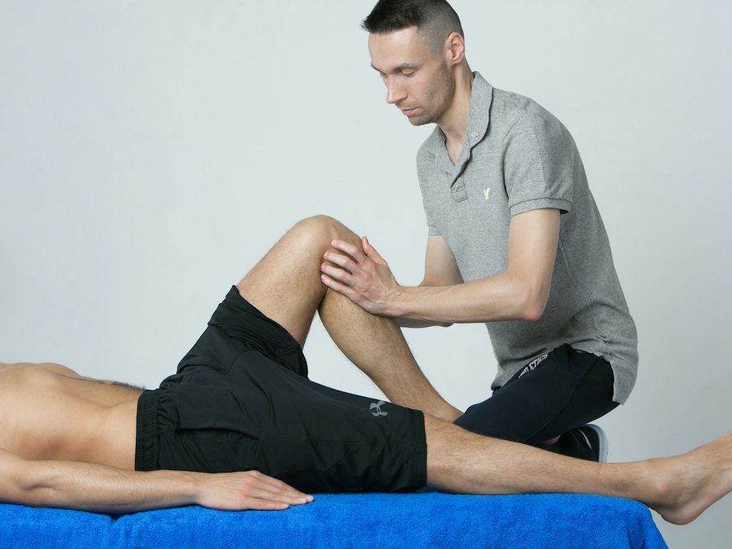
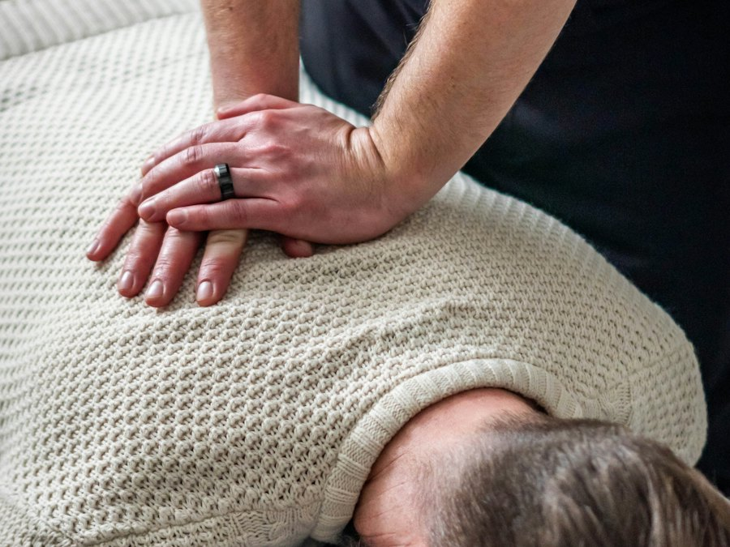
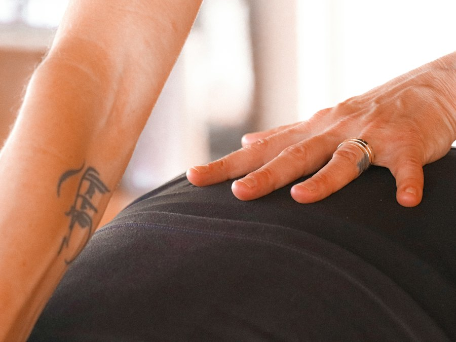
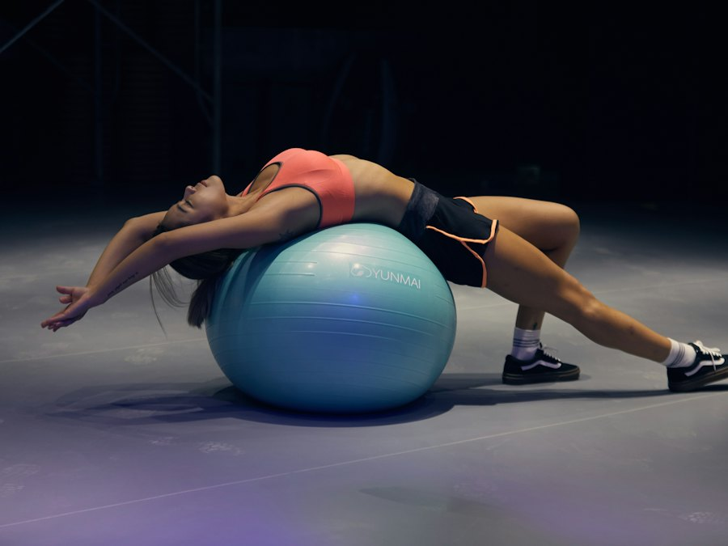
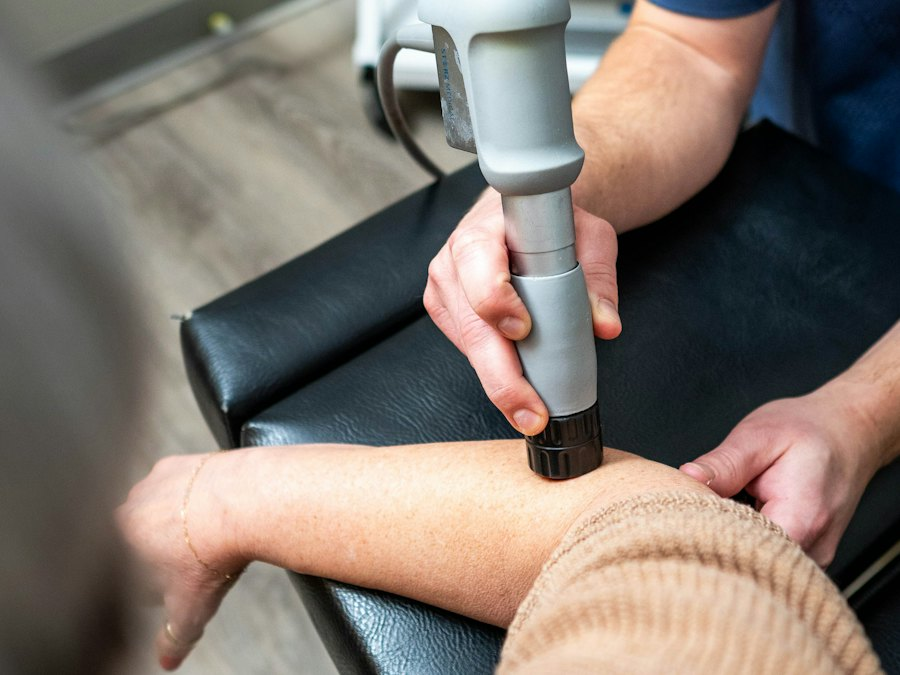
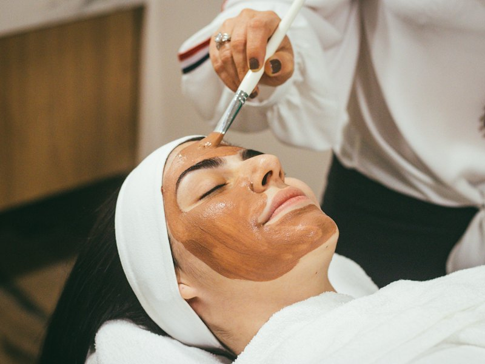
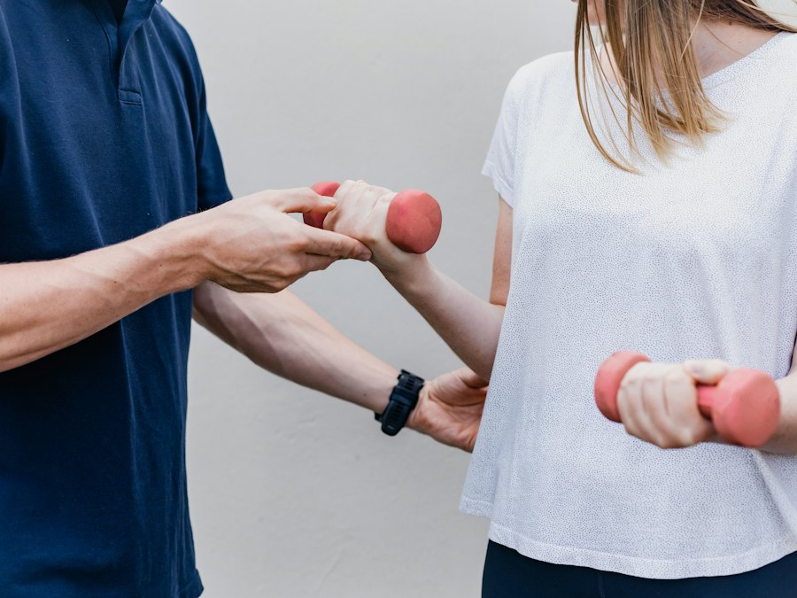

Центр фізичного відновлення «РУХ»: знаходимо причину болю, відновлюємо після травм і виправляємо поставу дорослим і дітям.
Записатися 📞 098 128 44 68Кожен напрям має окрему сторінку з цінами й відповідями на часті питання, щоб людина з Google одразу бачила, що це саме до вас.

Заняття з реабілітологом після переломів, операцій, при болю в спині й суглобах.

Шукаємо причину болю, а не лише знімаємо симптом. Полегшення часто вже з першого сеансу.

Загальнооздоровчий, антицелюлітний, масаж стоп. Абонементи зі знижкою.

Сколіоз, сутулість, плоскостопість. Консультація кінезіолога для дітей і вправи на дім.

Відновлювальне й лімфодренажне тейпування, стретчинг з персональним тренером.

Чистки, пілінги, масаж обличчя, мікроструми, мезотерапія.

Ні. Можна прийти самостійно: на першій консультації кінезіолог оцінить стан і складе план занять. Якщо є знімки чи висновки лікарів, візьміть їх із собою.
Залежить від проблеми. Часто відчутне полегшення є після 1–3 сеансів, курс зазвичай 5–10 занять. Тому курси на 5 і 10 занять дешевші за разові.
Так. Консультація кінезіолога для дітей, дитячий масаж і корекція постави: сутулість, сколіоз, плоскостопість.
Так, консультація для пенсіонерів та людей з інвалідністю 1–3 групи коштує 250 грн. Є також знижка на повторну консультацію через 2–6 місяців.
Цього блоку в робочій версії не буде, він лише пояснює ідею чорновика.
Залиште телефон, і адміністратор передзвонить, підбере фахівця й зручний час. Або телефонуйте: 098 128 44 68.